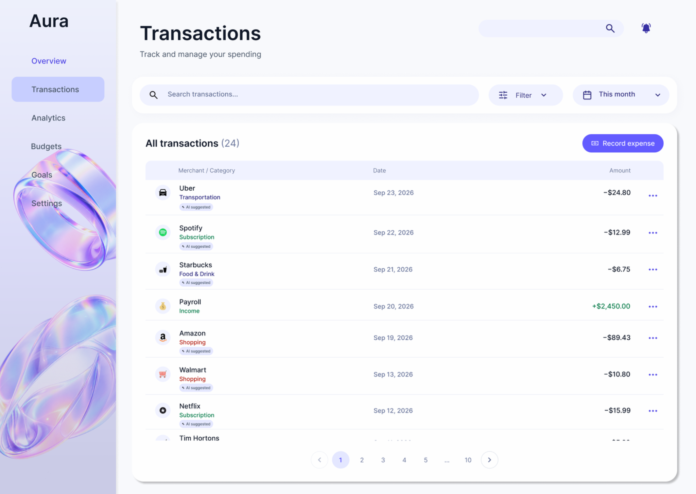
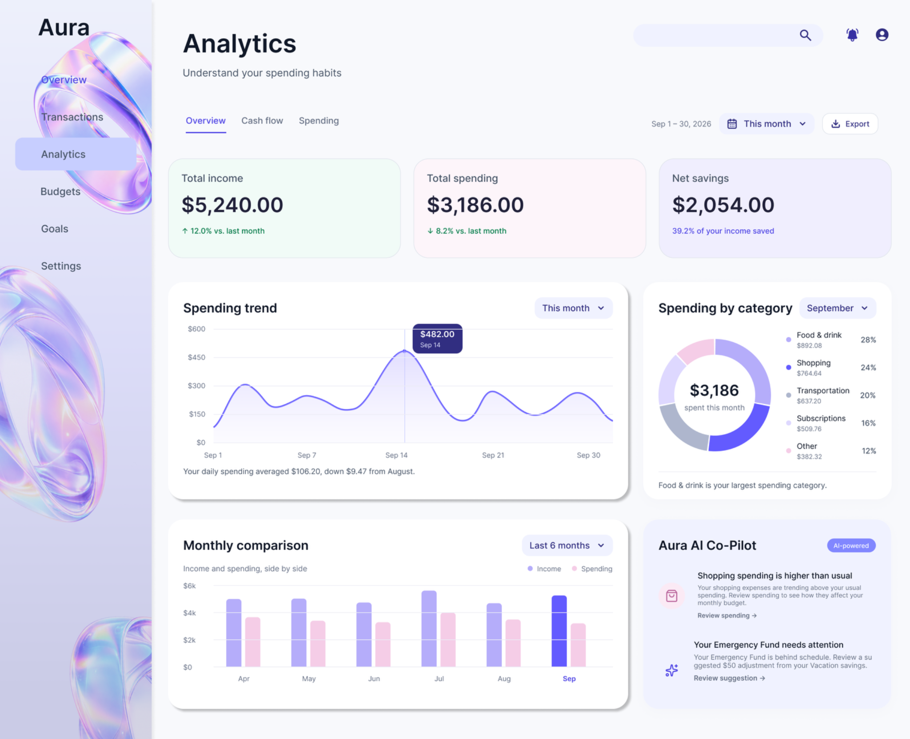
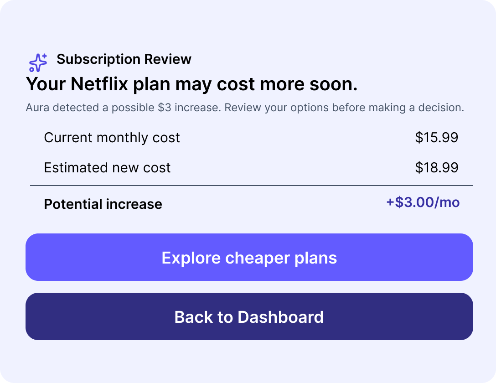

Structure information
Prioritize balances, recent activity, and spending patterns before deeper analytics.
An AI-assisted personal finance concept designed to make everyday financial decisions clearer and more manageable.

Aura / Selected work, 2026
Aura is a self-initiated personal finance desktop concept. It explores how AI-assisted guidance can help people interpret spending, review transactions, and act with confidence without giving up control.
Concept project. Financial figures and AI recommendations are illustrative; no live product metrics or user testing results are claimed.
Finance dashboards often present balances, charts, and transactions together, leaving people to interpret what matters and decide what to do next.
How might we make financial information easier to scan and turn it into useful next steps while keeping decisions in the user’s hands?
Prioritize balances, recent activity, and spending patterns before deeper analytics.
Place recommendations next to relevant financial information rather than relying on a chatbot-first experience.
Make AI suggestions visible, reviewable, and correctable.
Define consistent cards, transaction rows, inputs, states, and interaction patterns.
Three core surfaces — Dashboard, Transactions, and Analytics — use one visual system to support different financial decisions.


A subscription alert highlights a possible $3 monthly increase and invites review. Transaction categorization presents an AI suggestion with an explicit opportunity to correct it. Neither flow implies autonomous financial changes.

Reusable components support familiar patterns across the dashboard and transaction flows, including balance cards, charts, and transaction rows.


The result is a cohesive product concept exploring progressive disclosure, contextual AI, and human oversight. I learned to treat AI output as a starting point for user decisions rather than a final answer.
Next steps: test comprehension of recommendations, category correction, and accessibility before claiming product impact.
Explore Figma prototype ↗